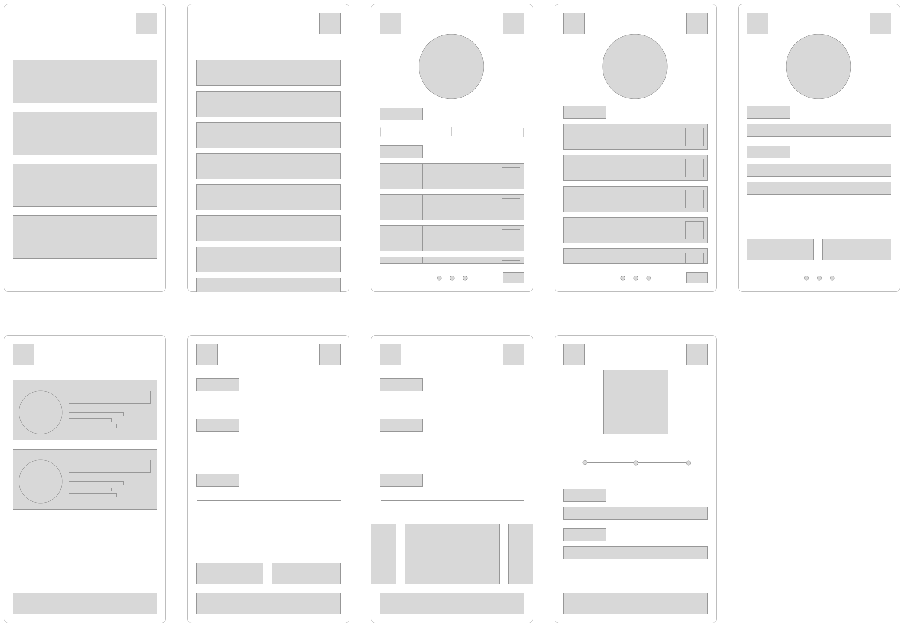
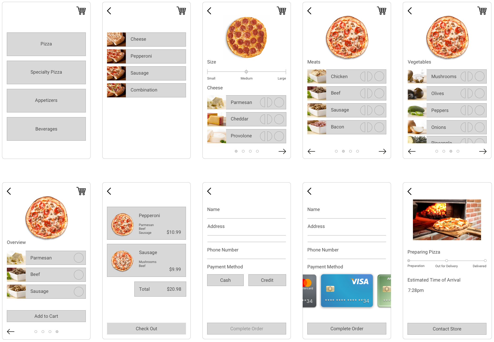

Improving the experience of ordering pizza
Problem Pizza is one of the most popular foods in Western culture. Thousands of people order pizza every day.
While many pizza services have recently updated their app and web interfaces to increase usability and promote sales, there still exists many lingering usability issues and thus opportunities to further improve upon the user experience of ordering pizza.
Research To learn more about the usability issues that users tend to face when ordering pizza online, several people who frequently ordered pizza were interviewed.
In addition, several existing pizza-delivery apps were analyzed in order to take a closer look at their current user experiences. These apps included: Slice, Papa Johns, Pizza Hut, and Dominoes.
After analyzing for common themes the research findings, it was gathered that a positive, intuitive pizza-ordering experience typically included:
- Pictures of food
- Minimal visual clutter
- Guided interaction flow with few steps
- Delivery status tracking
When selecting pizza, each ingredient was accompanied by a vivid image. Moreover, the pizza customization screens feature a dynamic preview image of the pizza's current state.
After selecting the pizza and checking out, the delivery screen conveys the status of the pizza, such as being prepared, out for delivery, or delivered, and the estimated time until delivery.   User Testing After the early design mock ups were created, user testing was conducted to collect feedback from users. A low-fidelity prototype was created from the early design mock ups using Invision, and users were asked to perform a benchmark task.
For the task, users were split into two groups; one group participated in a think-aloud activity, while the other group performed the activity silently on their own. ared, out for delivery, or delivered, and the estimated time until delivery.
Analysis of user feedback and observations revealed:
- Pictures of ingredients allowed users to quickly identify ingredients
- Dynamic pizza helped users to remember selected toppings
- Half-pie ingredient buttons were located too closely together
- Inability to skip customization slowed down the ordering process
For future design iterations, there would be a focus on addressing other common themes in the user testing feedback, such as:
- Navigation flexibility to skip forwards or backwards in the ordering process
- Increased use of color to improve usability and enjoyment
- Exploration of in-depth delivery tracking with GPS or live-streaming